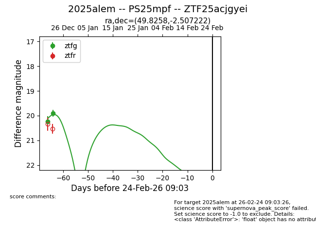
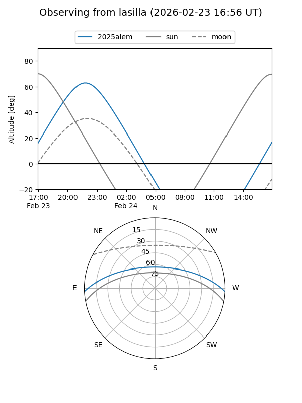
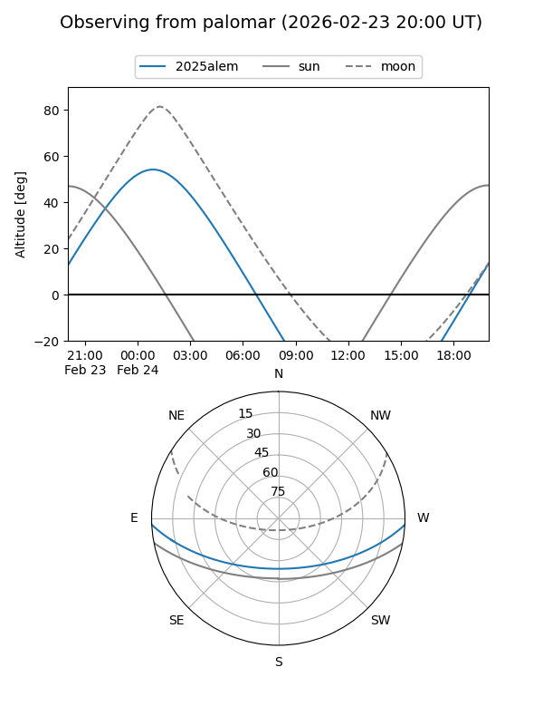
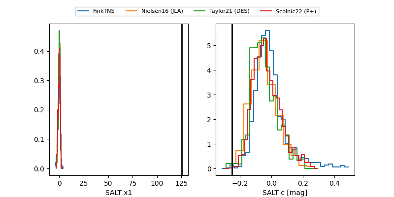

2025alem
Target 2025alem at 2026-01-28 19:21
Aliases and brokers:
FINK: link
Lasair: link
ALeRCE: link
TNS: link
YSE: link
alt names
ZTF25acjgyei (ztf,fink_ztf)
2025alem (tns,yse)
PS25mpf (panstarrs)
Coordinates:
equatorial (ra, dec) = 49.8258,-2.50722
equatorial (HMS+DMS) = 03:19:18.20,-02:30:26.00
galactic (l, b) = (184.5165,-46.91634)
Flags:
Photometry:
last ztfg=19.90
2 ztfg detections
Lightcurve

Visibility


Additional plots
